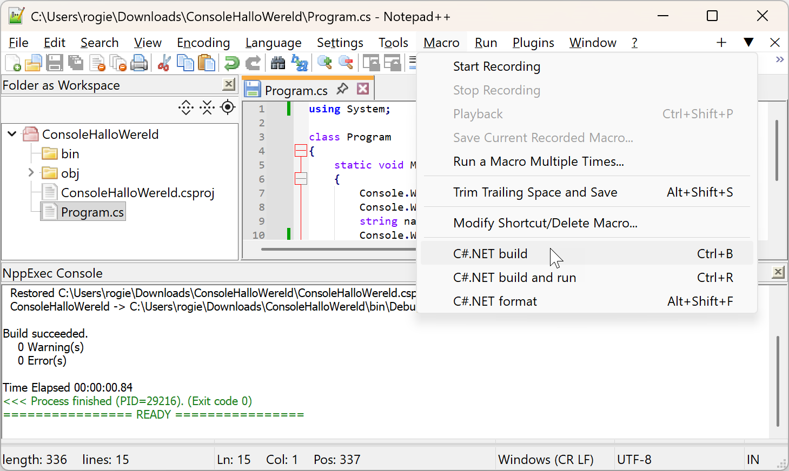
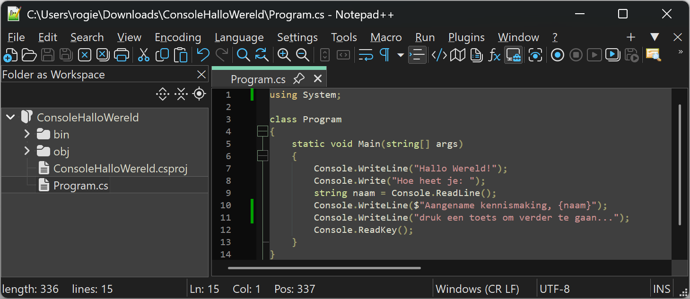

Installatie software
Voor dit deel heb je niet veel nodig; download en installeer het volgende (uitleg volgt later):
-
.NET8 SDK:
- SDK = Software Development Kit, nodig om .NET programma's te bouwen en te runnen
- download en installeer het vanop https://dotnet.microsoft.com/en-us/download/dotnet/8.0
-
Notepad++:
- programmeeromgeving: hierin gaan we onze code schrijven
- speciaal voor dit vak aangepaste versie van Notepad++, te downloaden als .zip via deze link
- pak het ergens uit; installatie is niet nodig, starten kan daarna eenvoudig door Notepad++Portable.exe te openen
C#.NET programmeren in Notepad++
De titel bestaat uit drie delen: C#, .NET en Notepad++. We leggen hier uit wat elk betekent.
C#: de programmeertaal
Er zijn veel programmeertalen: Javascript, Python, C#, Ruby... Een programmeertaal legt de regels vast (grammatica, of syntax) volgens dewelke code geschreven wordt. Een vergelijking van C# met bijvoorbeeld Javascript, Ruby en Python:
for (int i = 1; i <= 5; i++)
{
if (i % 2 == 0) Console.WriteLine(i);
}for (let i = 1; i <= 5; i++) {
if (i % 2 == 0) console.log(i);
}
(1..5).each do |i|
puts i if i.even?
end
for i in range(1, 6):
if i % 2 == 0:
print(i)
.NET: het framework
Naast een programmeertaal, heb je ook een context nodig, i.e. de omgeving waarbinnen je de taal wil gebruiken. C# is sterk verbonden met het .NET Framework, gebruikt om Windows toepassingen te schrijven. Dit bestaat hoofdzakelijk uit een bundel pakketten met voorgeschreven code, georganiseerd in een boomstructuur of namespaces. Enkele die je regelmatig zal tegenkomen:
| namespace | omschrijving |
|---|---|
System |
basisfuncties: schrijven/lezen in console, random getallen... |
System.Collections.Generic |
lijsten, dictionaries, sets |
System.IO |
bestanden en mappen |
System.Text |
tekstbewerking, StringBuilder |
Om een namespace te gebruiken in je programma, moet je het bovenaan toevoegen:
using System;
using System.Collections.Generic;
...

C# wordt ook in andere omgevingen gebruikt dan .NET; enkele voorbeelden:
- Unity (game programming) gebruikt C# als primaire scripttaal
- .NET nanoFramework en Meadow gebruiken C# op microcontrollers
- Mono laat toe C# te draaien op Linux/Mac zonder Microsoft’s .NET.
Maar in praktijk wordt C# dus hoofdzakelijk gebruikt met het .NET Framework.
Notepad++: de ontwikkelomgeving
Dit is het programma waarin we onze code gaan schrijven en uitvoeren. In het volgende deel wordt uitgelegd hoe je het gebruikt. Alvast een screenshot:
Stap voor stap
Een programma is een opeenvolging van instructies die in een bepaalde volgorde worden uitgevoerd. Het hele proces van code tot uitvoering bestaat uit drie grote stappen: coderen—builden—runnen. Grafisch samengevat:
bestanden aanmaken
Maak eerst in verkenner een projectmap aan voor je oefening, b.v. ConsoleHalloWereld. Open de folder dan in Notepad++:
Vervolgens maak je twee bestanden aan in die map (in Verkenner of in Notepad++):
- Program.cs: eigenlijke programmacode
- ConsoleHalloWereld.csproj: meta informatie over je programma (.NET versie e.d.)
In principe maken de namen van de bestanden en mappen niet uit. Uit conventie houden we ons aan volgende regels:
- projectmap: Console + oefeningnaam, b.v. ConsoleHalloWereld, ConsoleGetalRaden, ConsoleBankautomaat...
- programmabestand: Program.cs
- projectbestand: projectmapnaam + .csproj, b.v. ConsoleHalloWereld.csproj, ConsoleGetalRaden.csproj...
coderen
Dit is het schrijven van het programma zelf. Screenshot van een eenvoudig C# programma in Notepad++:
Het .csproj bestand is heeft altijd de naam van de map, dus ConsoleHalloWereld, ConsoleGetalRaden enz... De code is altijd dit:
<Project Sdk="Microsoft.NET.Sdk">
<PropertyGroup>
<OutputType>Exe</OutputType>
<TargetFramework>net8.0</TargetFramework>
<ImplicitUsings>disable</ImplicitUsings>
</PropertyGroup>
</Project>Het .cs bestand heet altijd Program.cs. De basisstructuur:
/*
* Auteur: Rogier van der Linde
* Datum: 2025-09-05
*/
using System;
class Program
{
static void Main(string[] args)
{
// programmacode hier
// ...
}
}builden
Als je klaar bent, ga je naar de volgende stap, het builden. De code wordt door dan in verschillende stappen omgezet naar een .exe bestand met platform-onafhankelijke tussencode, CIL of Common Intermediate Language genoemd, bestaande uit low-level instructies of bytecodes. Voor de geïnteresseerden: je kan de bytecodes zien door de .exe te openen in tools als ILSpy. Enkele aspecten van het build proces:
- linking: combineren van alle bronnen, codefiles, libraries, referenties enz... in één bestand
- compiling: vertaling van hig-level C# code naar low-level bytecodes
De basismanier is de oefeningenmap openen in een Commandovenster, en het commando dotnet build gebruiken:
Als er fouten in je programma staan, krijg je de mededeling dat de build mislukt is en een overzicht van de fouten:
Als de build gelukt is, komen er twee mappen bij in je project:

- bin: bevat de binaire (uitvoerbare) bestanden
- obj: bevat tijdelijke en intermediarie bestanden
Je mag die bin en obj mappen altijd handmatig verwijderen en opnieuw builden; soms kan je daarmee buildproblemen oplossen.
runnen
De basismanier is het .exe bestand in bin/Debug/net8.0 starten door dubbelklikken in Verkenner:
De .NET Common Language Runtime (CLR) zal tijdens de uitvoering (JIT: just in time) de bytecode vertalen in platform-specifieke machine-instructies. Het programma in actie:
programma onderbreken met Ctrl-C
Om de uitvoering van een programma voortijdig te stoppen, druk in de console Ctrl-C:
Notepad++ macro's
In de portable versie van Notepad++ gebruikt in de lessen zijn drie macro's (scripts) toegevoegd die formatteren, builden en runnen makkelijker maken:
Je kan dan b.v. eenvoudig builden en runnen met Ctrl-R.
De macro's werken alleen als het codebestand geopend is in Notepad++!
Soorten fouten
In elke fase van het programma kunnen fouten optreden:
- syntax error: je code bevat een fout tegen de vormregels van de programmeertaal, bv. puntkomma of haakje vergeten
- build error: je code is correct geschreven, maar tijdens het builden loopt iets fout, bv. een bibliotheek wordt niet gevonden
- runtime error: je code compileert netjes, maar tijdens het uitvoeren loopt je programma vast, bv. een onverwachte deling door nul, geheugenfout, bestand wordt niet gevonden enz...
- logical error: je programma loopt niet vast, maar doet niet wat je verwacht, bv. de output is verkeerd of een knop werkt niet
Notepad++ weetjes
lettertype veranderen
Het standaard lettertype voor code is Courier New, wat lastig leesbaar is. In Notepad++ kan je dit aanpassen via Settings, Style Configurator:
dark mode
Via Settings, Preferences kan je dark mode inschakelen:
Voor het overige raden we aan niet teveel aan de instellingen te prutsen.
shortcuts
Algemene shortcuts van elke tekst editor:

Nog een paar typische Notepad++ shortcuts die je zou moeten kennen:
| Shortcut | Betekenis |
|---|---|
Ctrl-K, Ctrl-Shift-K |
Comment, Uncomment geselecteerd blok |
Ctrl-H |
zoeken en vervangen |